About
I like simulating the physical world with computers and using those simulations to design and optimize useful things. My focus is differentiable simulation: writing physics solvers that can compute not just what a system does, but exactly how it responds to changes, enabling gradient-based optimization over designs with enormous numbers of parameters.
I'm currently Head of Photonics at Flexcompute Inc., where I lead a technical team building AI-driven simulation products. A major part of my focus is on the agentic entrypoints to these tools: we've built an MCP server that exposes our electromagnetic solver to AI agents, and I'm deeply involved in shaping how that gets used to solve real photonic design and optimization problems. I'm drawn to this boundary where AI learns about and reasons over the physical world, both as a way to accelerate scientific work and as a rich domain for fundamental AI research.
Earlier at Flexcompute, I was the principal developer of Tidy3D (330 ★ on GitHub), our open-source Python framework for cloud-based, GPU-accelerated electromagnetic simulation. I was in the weeds on everything: writing solver code, building and maintaining the Python client, and leading community and documentation efforts. My deepest technical contribution was making the entire simulation framework differentiable: users can now differentiate through a full 3D Maxwell's equations solve running on a cloud GPU cluster in a single adjoint pass, compatible with JAX and PyTorch, enabling large-scale gradient-based inverse design with hundreds of thousands of parameters.
Before Flexcompute, I completed my PhD in Applied Physics at Stanford, advised by Prof. Shanhui Fan. My PhD work established some deep connections between physics and computation: I showed that wave physics maps exactly to recurrent neural networks, proposed and experimentally demonstrated backpropagation implemented in light for training optical neural networks, and developed adjoint methods for electromagnetic inverse design.
I studied physics at the University of Michigan and now live in New York City. When I'm not building things I'm usually traveling, cooking, or running around Central Park. Resume here, last updated November 2025.
Writing
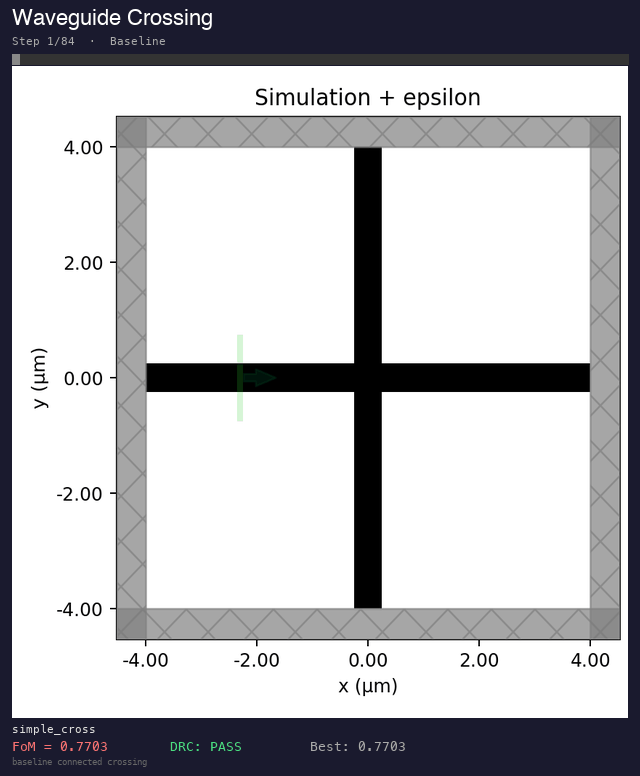
AI agents equipped with an electromagnetic simulator and design rule checker tackle photonic component design — waveguide bends, crossings, splitters, and demultiplexers — through iterative simulation and optimization. Explores where agentic AI excels and where it hits the limits of parametric search.
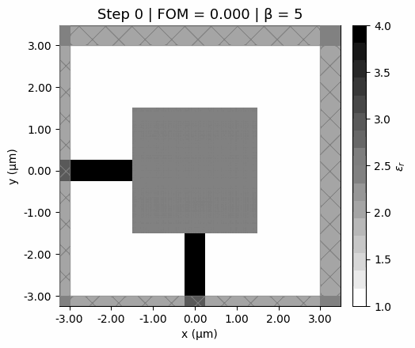
A compact introduction to photonic inverse design using Tidy3D. Combining electromagnetic simulation with the adjoint method, a simple 10-iteration optimization loop discovers a waveguide bend achieving ~89% power transmission through a 90° corner.
Timeline
Building differentiable simulation frameworks, agentic design workflows, and an MCP server connecting our electromagnetic solver to AI agents. Principal developer of Tidy3D and its adjoint-based automatic differentiation plugin.
Selected Publications
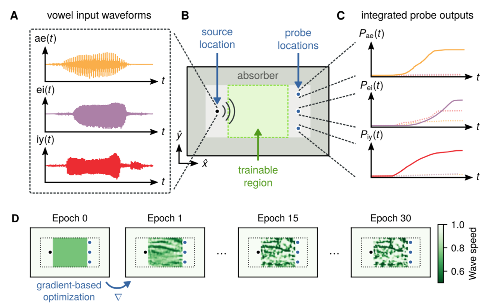
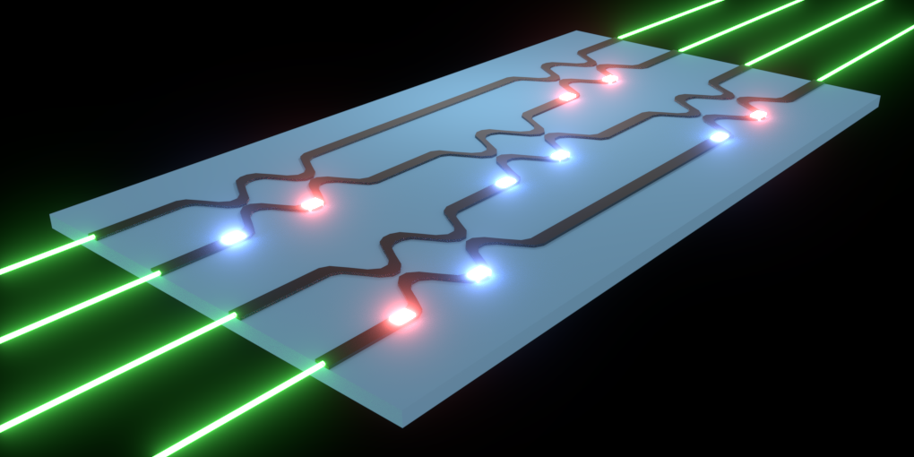
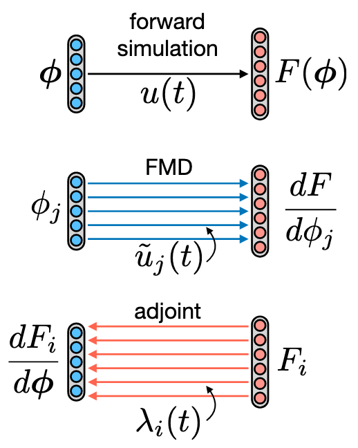
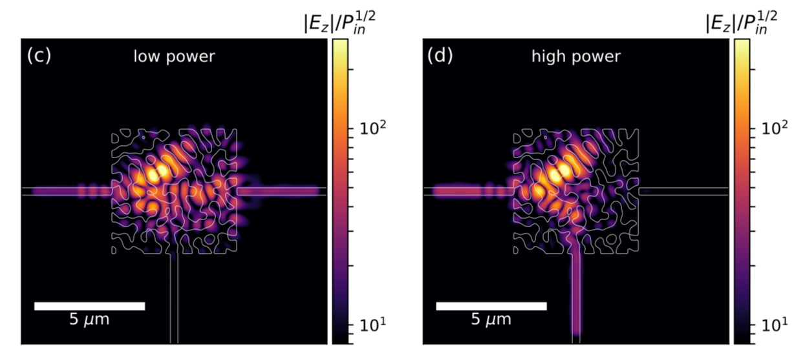
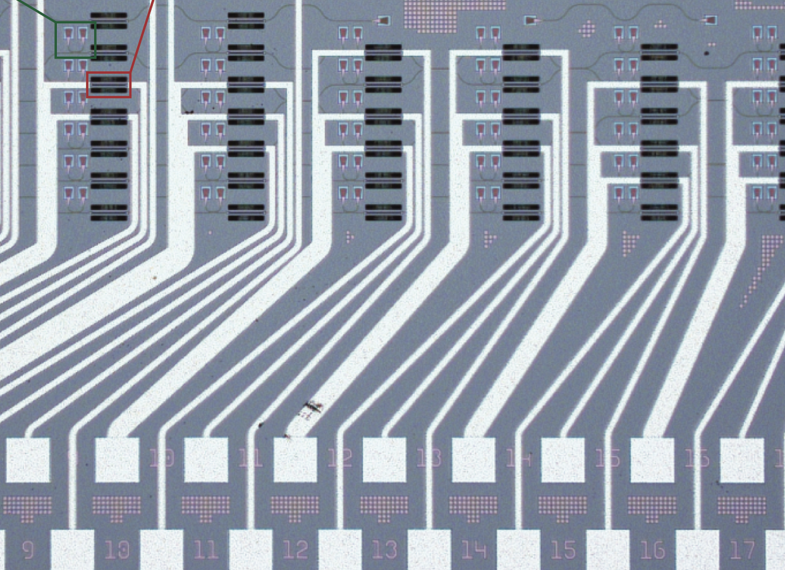
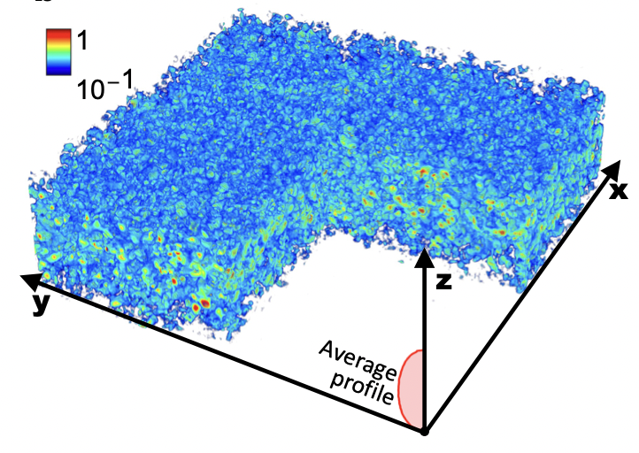
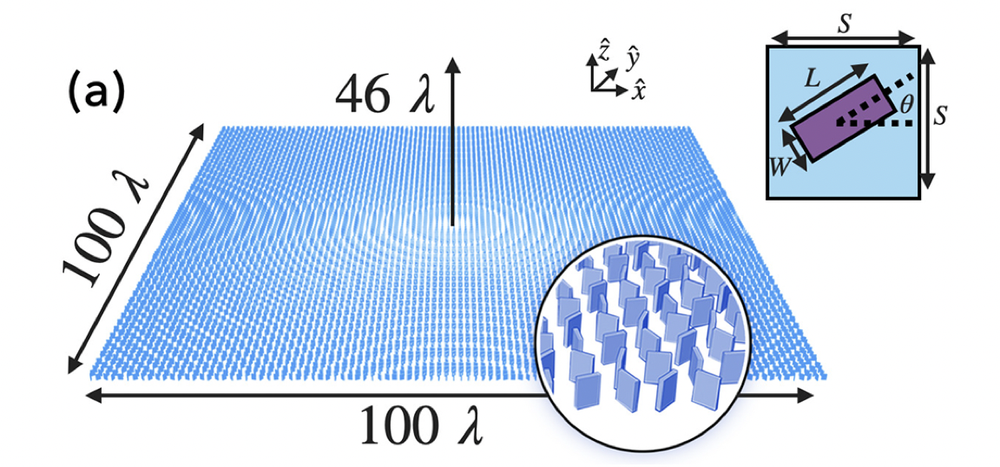
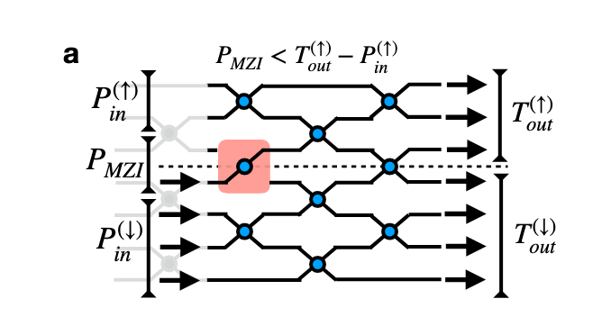
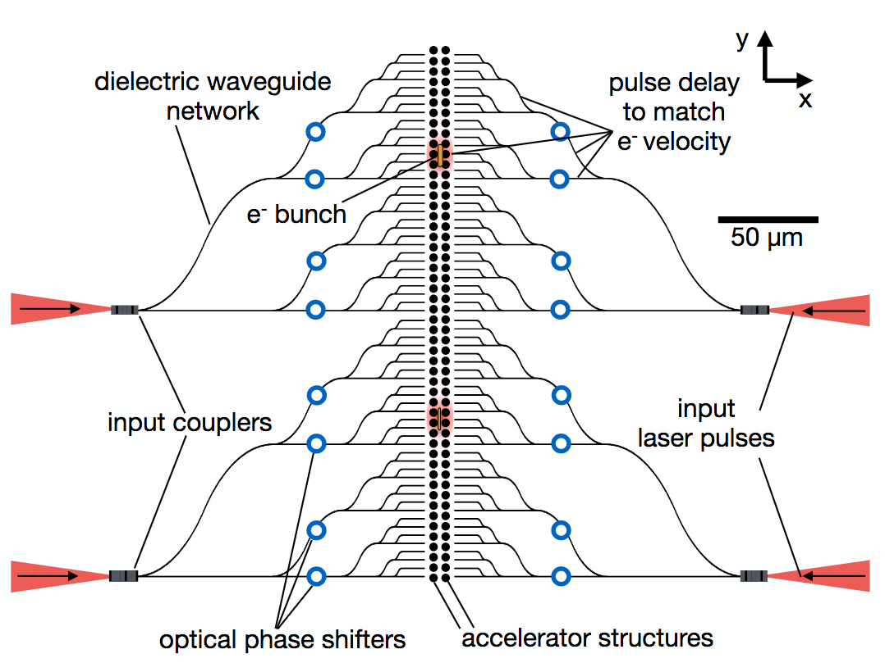
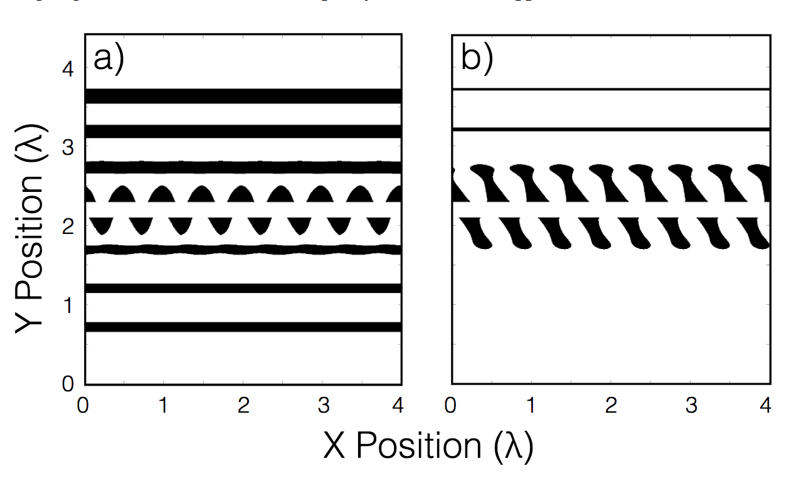
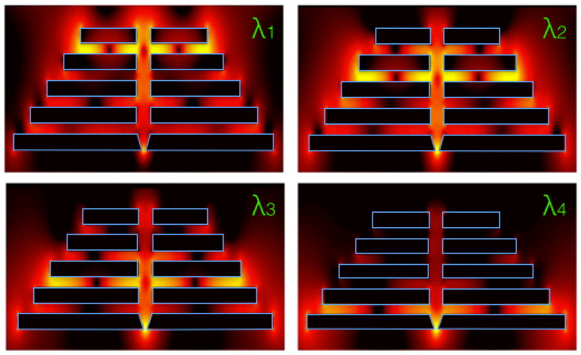
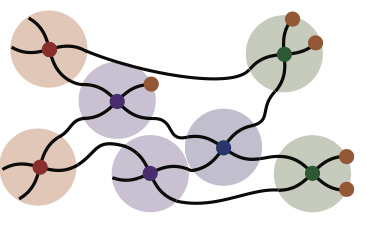
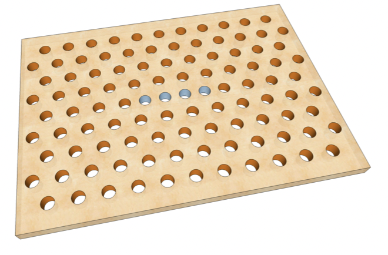
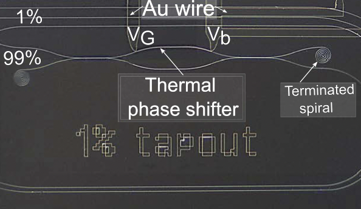
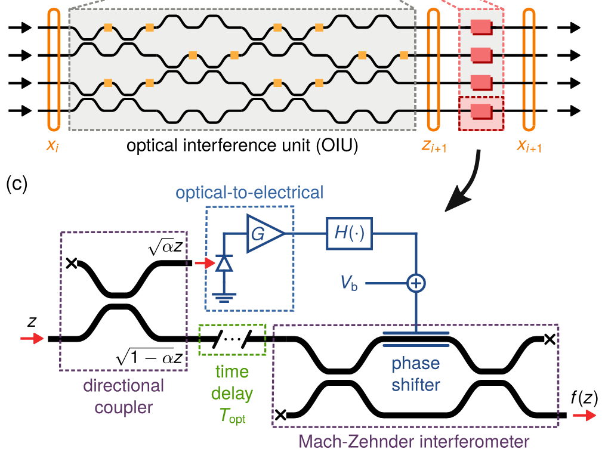
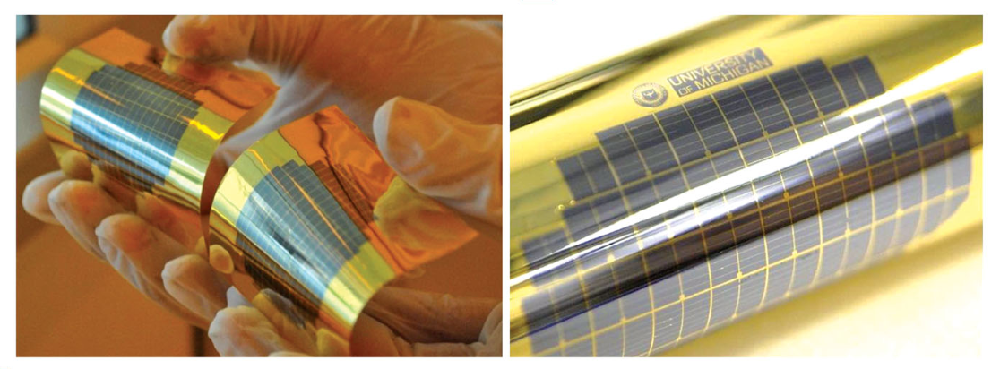
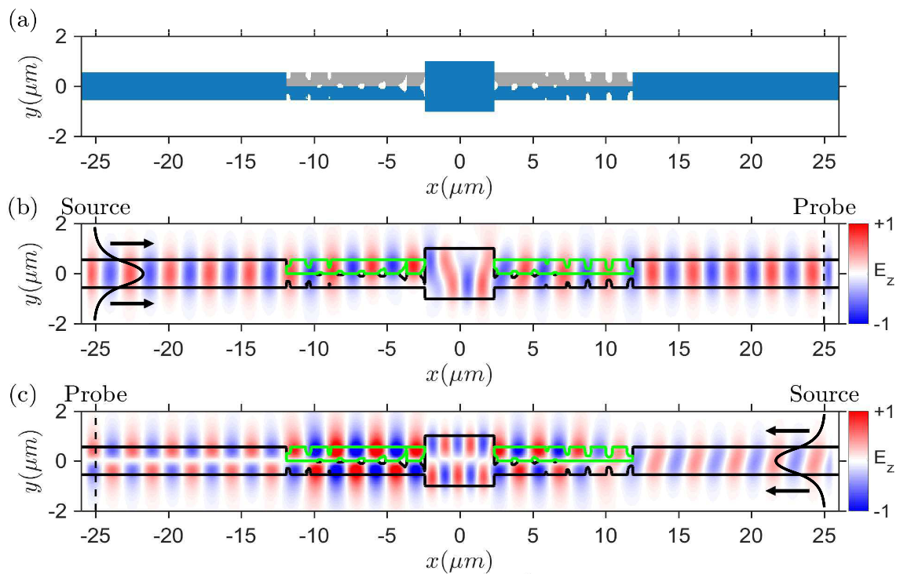
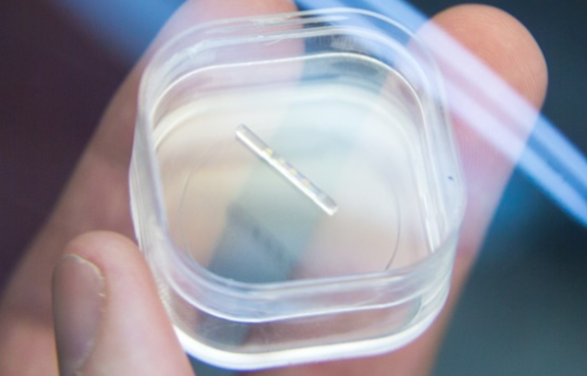
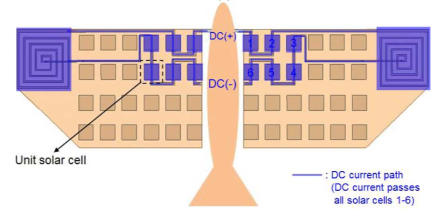
Selected Talks
Patents
Open Source
Contact
Open to research conversations and opportunities — feel free to reach out.